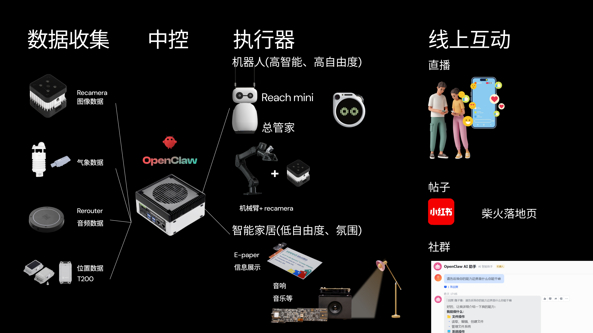

AI 吟游诗人
具身智能 AI 旅伴——让机器人看、听、动、感知环境的物理存在
Date
2026
Duration
3 months (ongoing)
Category
AI Hardware Innovation
Tools
Jetson, Python, OpenClaw, YOLO
Context
Internship @ Seeed Studio
This project is still in progress. Results described below are expected outcomes.
Situation
在 Seeed Studio 的智能房车（Chaihuo MCV）项目中，团队希望将开源 AI Agent（OpenClaw）与物理机器人（Reachy Mini）和车载智能家居系统（Home Assistant）打通，打造一个具备"具身智能"的 RV 智能助手——让 AI 不再只是屏幕上的对话框，而是一个能看、能听、能动、能主动感知环境的物理存在。
Task
负责探索并搭建初步 Demo 验证系统的架构：
将 OpenClaw 作为 AI 决策大脑部署在 Jetson 边缘设备上，连接 Reachy Mini 机器人作为交互终端，并接入房车内的 Home Assistant 智能家居生态，实现语音驱动的环境感知与设备控制闭环。
探索创新交互场景，如让机器人主动观察用户日常并生成第一人称视角的"AI 旅行日记"。
Action
- ✅ 已完成：OpenClaw + Reachy Mini 的全链路部署与调试，打通了"语音输入 → OpenAI Realtime API 转写 → DeepSeek 模型推理 → Skill 执行 → 语音合成输出"的完整交互链路。
- 🚧 进行中：设计"AI 日记"功能的产品方案——通过定时拍照、环境音采集与持久化记忆，让机器人在一天结束时自动生成带有个人视角的旅途日记。
- 🚧 进行中：为智能家居控制编写 OpenClaw Skill，实现通过自然语言控制车内灯光、空调等设备。
Expected Result
- 搭建从 AI 推理到物理交互的端到端原型系统。
- 验证开源 AI Agent 在具身智能场景下的可行性。
- 为 Chaihuo MCV 项目提供了"AI 旅伴"的核心叙事方向，并为后续的社媒内容运营（小红书）提供了差异化的传播素材。
Lofi UI Workflow
Interactive storyboard prototype: